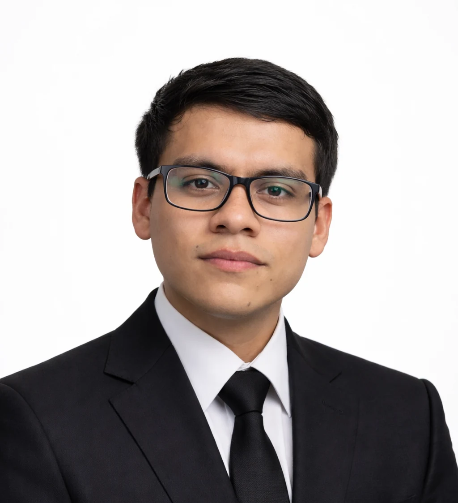
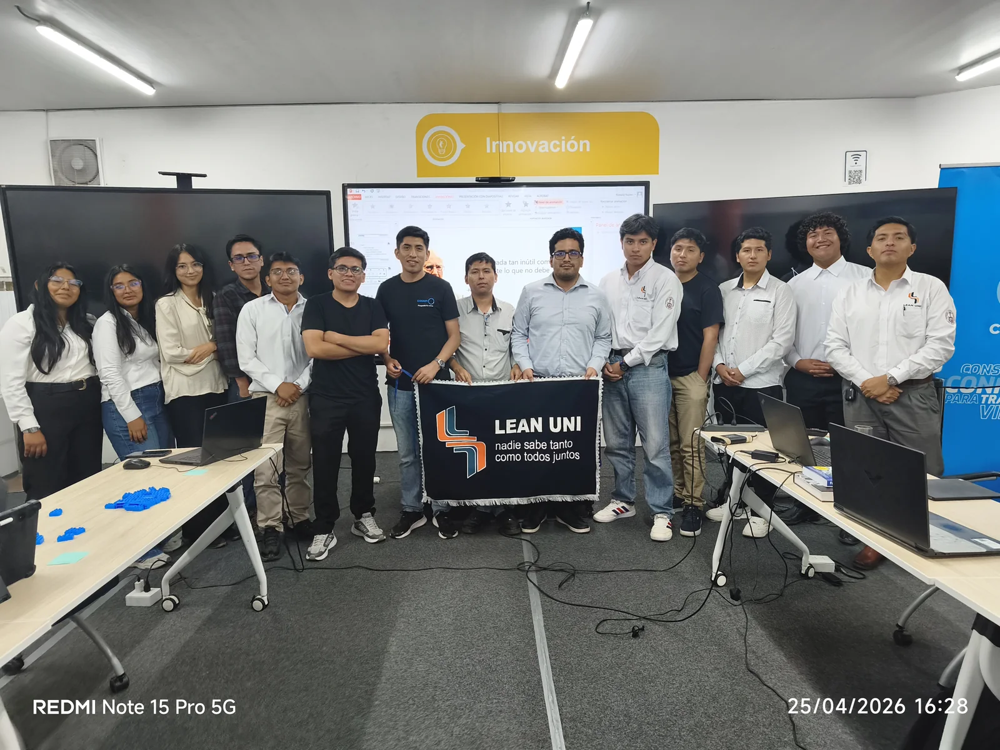

Ingeniería Civil
Formación orientada al análisis, diseño y desarrollo responsable de infraestructura.
Ingeniería Civil · UNI
Formación técnica, liderazgo y mejora continua para contribuir a una construcción más colaborativa y eficiente.

01
Perfil
Soy estudiante de noveno ciclo de Ingeniería Civil en la Universidad Nacional de Ingeniería, perteneciente al quinto superior.
Me interesa comprender los proyectos más allá del cálculo: cómo se planifican, cómo colaboran las personas y cómo la innovación puede mejorar los resultados en construcción.
Complemento mi formación con una participación activa en comunidades estudiantiles, iniciativas de liderazgo y espacios de aprendizaje vinculados con Lean Construction, BIM y gestión de proyectos.
02
Áreas de interés
Formación orientada al análisis, diseño y desarrollo responsable de infraestructura.
Planificación, organización y toma de decisiones para transformar objetivos en resultados.
Mejora continua, colaboración y generación de valor en los procesos de construcción.
Herramientas digitales y metodologías que conectan información, equipos y decisiones.
03
Logros
Reconocimiento al rendimiento académico durante la carrera de Ingeniería Civil.
Propuesta desarrollada en equipo, reconocida por su innovación y compromiso.
Reconocimiento latinoamericano al impacto y planteamiento de la propuesta.
Aplicación de análisis, diseño estructural y trabajo colaborativo.

04
Liderazgo estudiantil
En 2026 participo en la directiva de Lean UNI, comunidad estudiantil dedicada a difundir principios de Lean Construction y promover espacios de aprendizaje colaborativo.
Mi forma de avanzar
“La ingeniería transforma cuando el conocimiento se combina con colaboración, disciplina y propósito.”